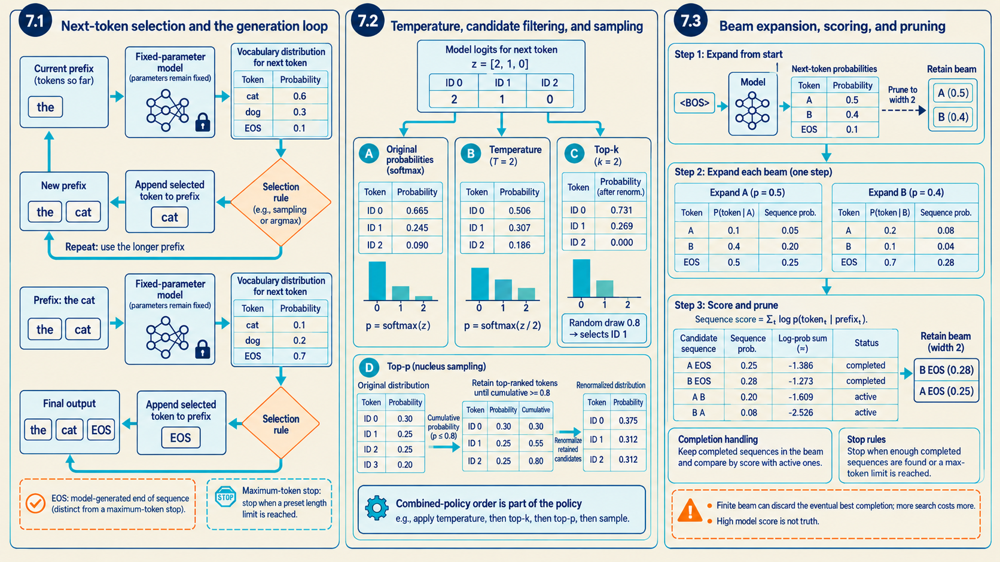
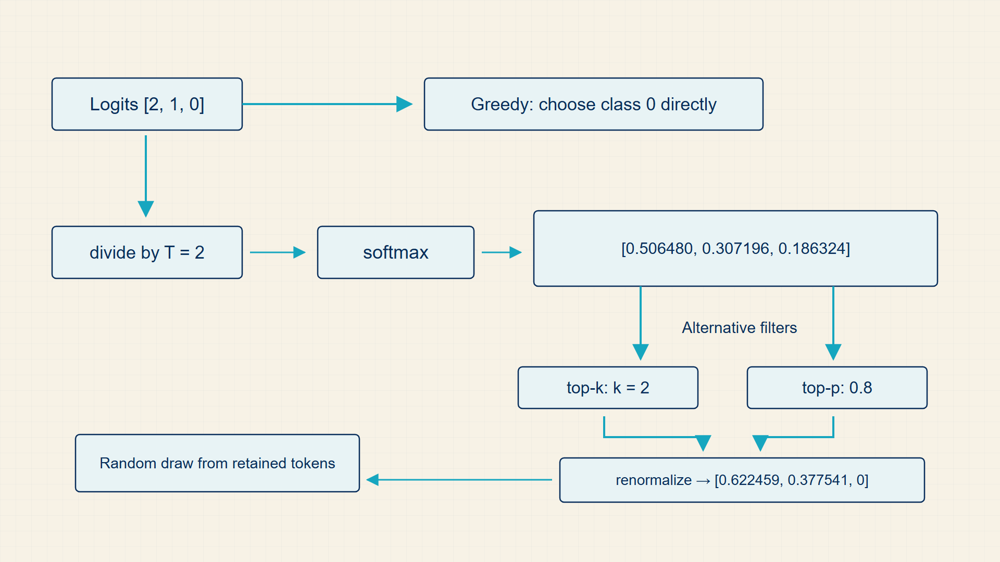

7 Decoding Strategies: Generating Text Token by Token
A next-token model assigns probabilities to possible continuations but leaves the output token undecided. Generation selects a token, appends it to the prefix, and calculates another distribution from the longer input. The parameters stay fixed while the selected text changes what the model sees next.

7.1 Next-token selection and the generation loop
A classifier can return one category after a single calculation. Generating text with a language model repeats the model calculation and token selection until a stopping condition is met. Each decoder step calculates the next-token logits for the available prefix. Softmax, as defined in §6.2, converts those scores into a vocabulary distribution, with one probability per possible next token:
\[ P(\mathrm{next}=i\mid\mathrm{context})=\operatorname{softmax}(\mathrm{logits})_i \tag{7.1}\]
Here \(i\) identifies a candidate token. The prompt is the input text supplied to start generation, and the context grows with the tokens already generated. The distribution is conditional on that context. Selecting a different token can change every probability in the following step.
Greedy decoding selects a token with the highest current probability:
\[ \mathrm{next}=\operatorname*{arg\,max}_{i}p_i \tag{7.2}\]
The probabilities are \(p_i\). If several candidates share the maximum, this example chooses the lowest token ID. With finite logits and exact arithmetic, taking their maximum gives the same choice as taking the softmax maximum. The decision rule is deterministic for fixed computed scores and a fixed tie rule.
Example: Selection, appending, and stopping
Use three possible next-token IDs: 0 for cat, 1 for sat, and 2 for EOS. The prompt is the. Treat the following distributions as supplied model outputs for this small inference trace.
- For prefix
the, probabilities are \((0.6,0.3,0.1)\). Greedy selection chooses ID 0, whose probability is 0.6. Appending it givesthe cat. - The fixed model receives that longer prefix. Its new probabilities are \((0.1,0.2,0.7)\). It selects ID 2 and appends EOS, ending this generation.
No reference answer or loss is needed for either choice. EOS marks completion, while a separate maximum-new-token limit can stop a sequence that never selects EOS. The displayed text normally omits this control marker.
Conclusion: One distribution supplied one decision. A second model calculation was necessary because the prefix changed. Appending tokens changed the inference state without changing any parameter.
Greedy choice does not examine the continuations that would follow a rejected token. Sampling can explore different prefixes, and beam search can keep several candidates. These choices alter selection. Later, §21.1 develops a cache that reuses valid intermediate calculations to save computation. Exact reuse preserves the mathematical model, although numerical execution can affect the computed scores.
7.2 Temperature, candidate filtering, and sampling
Drawing directly from the model distribution can select a low-probability token. A decoding policy can change the probability gaps or restrict the available candidates before that draw. Such changes can affect repetition and diversity, but neither variety nor concentration establishes factual correctness.
Temperature is a positive divisor on logits before softmax:
\[ p_i^{(\tau)}=\frac{e^{z_i/\tau}}{\sum_j e^{z_j/\tau}} \tag{7.3}\]
Here \(z_i\) is the logit of token \(i\) and \(\tau>0\) is the temperature. At \(\tau=1\), the original distribution is recovered. A larger divisor reduces score gaps, while a smaller divisor increases them. As \(\tau\) approaches zero, mass concentrates on the largest logits. Setting \(\tau=0\) in this formula is undefined. With tied maxima, this limit alone does not choose one token.
For filtering, sort the \(V\) token indices as \((i_1,\ldots,i_V)\) by decreasing probability. Use token ID to break equal-probability ties. Top-k sampling retains exactly the first \(k\) indices, for \(1\le k\le V\):
\[ S_k=\{i_1,\ldots,i_k\},\quad p_{i_1}\ge p_{i_2}\ge\ldots\ge p_{i_V},\quad 1\le k\le V \tag{7.4}\]
Top-p sampling, also called nucleus sampling, retains the shortest sorted prefix whose probability mass reaches or exceeds a threshold \(0<p_{\mathrm{top}}\le1\):1
\[ S_{p_{\mathrm{top}}}=\{i_1,\ldots,i_m\},\quad m=\min\left\{r:\sum_{j=1}^{r}p_{i_j}\ge p_{\mathrm{top}}\right\},\quad 0<p_{\mathrm{top}}\le1 \tag{7.5}\]
The support of a sampling distribution consists of candidates with nonzero probability. It equals the retained set when every retained probability is positive. Top-k fixes the retained count. Top-p can retain many candidates for a flat distribution and few for a concentrated one.
For either retained set \(S\), the remaining probabilities must sum to one. Renormalization gives \(q_i=p_i/\sum_{j\in S}p_j\) within \(S\), and zero outside it. One possible combined policy is temperature, then top-k, renormalization, then top-p on that distribution, and final renormalization before sampling. The operation order is part of the policy. The worked comparisons below instead start from separate inputs or reset to the original logits.
Example: Separate decoding choices
These comparisons use separate inputs. They are not successive modifications of one distribution.
- For \(p=(0.1,0.7,0.2)\), greedy decoding selects zero-based index 1.
- For logits \((2,1)\), temperature 2 gives scaled scores \((1,0.5)\). Their probabilities are approximately \((0.622459,0.377541)\), compared with \((0.731059,0.268941)\) at temperature 1.
- For the flatter distribution \(p=(0.30,0.25,0.25,0.20)\), top-k with \(k=2\) retains indices 0 and 1 under an index-order tie rule. Their mass is 0.55, so renormalization gives approximately \((0.545,0.455,0,0)\). Top-p with threshold 0.8 instead needs the first three entries, whose mass is 0.80. Its renormalized distribution is \((0.375,0.3125,0.3125,0)\).
- For the concentrated distribution \(p=(0.90,0.05,0.05)\), top-p at 0.8 retains only index 0 and renormalizes it to probability 1. Top-k with \(k=2\) still retains two entries; under the same tie rule it keeps indices 0 and 1, giving approximately \((0.947,0.053,0)\).
Conclusion: Temperature changes relative probabilities without removing finite-score candidates. Top-k fixes a count, while top-p fixes a cumulative-mass threshold. The flat and concentrated cases show that either policy can retain a different number of tokens from the other.
The figure connects scores, probability transformations, and token selection.

The following trace compares the policies on one set of logits and then uses a supplied random draw to select a token. Each comparison resets to the original logits, so temperature and filter changes are independent.
Example: Independent policies on three logits
Start with \(z=[2,1,0]\). At temperature 1, softmax gives approximately \([0.665,0.245,0.090]\). Greedy choice is ID 0.
For a temperature-only comparison, set \(\tau=2\). Applying the temperature rule above scales the scores to \([1,0.5,0]\) and gives approximately \([0.506,0.307,0.186]\). The displayed probabilities are rounded and need not sum to exactly one.
Reset to the original logits at temperature 1. Top-k with \(k=2\) retains IDs 0 and 1, whose original mass is approximately \(0.665+0.245=0.910\). Renormalization gives \([0.731,0.269,0]\). The following draw uses this top-k distribution. The earlier flat and concentrated examples show why a top-p policy must be calculated separately rather than assumed to retain the same IDs.
For a concrete sampling check, divide the interval \([0,1)\) at probability 0.731. A supplied uniform draw of 0.8 belongs to the second interval and selects ID 1. That scalar integer is appended to the prefix. The next logits must be calculated for the changed prefix.
Conclusion: The \([0.731,0.269,0]\) values use top-k at temperature 1, not the preceding temperature-2 comparison. The draw explains why sampling can choose a token other than the greedy maximum.
The logits and probability arrays each have shape \([V]\). Top-k retains exactly \(k\) indices under the specified tie rule, while top-p’s count depends on cumulative mass.
The runnable PyTorch example takes four logits, applies temperature 0.8, and retains two candidates. torch.topk selects their scores and indices. Negative infinity excludes the other scores when torch.softmax normalizes them, using §6.3’s finite-maximum condition. Here both retained scores are finite. torch.multinomial then draws one retained ID.
Code example: Temperature and top-k filtering for one next-token decision
import torch
logits = torch.tensor([2.0, 1.0, 0.5, -1.0])
temperature = 0.8
top_k = 2
scaled = logits / temperature
values, indices = torch.topk(scaled, top_k)
filtered = torch.full_like(scaled, float("-inf"))
filtered[indices] = values
probabilities = torch.softmax(filtered, dim=-1)
print(probabilities)
print(torch.multinomial(probabilities, num_samples=1))The probability vector is approximately [0.7773, 0.2227, 0, 0], and the sampled ID is 0 or 1. This is one selection, not the append-and-repeat loop. Its four logits are distinct, so it does not test the token-ID tie rule defined above. A general implementation must apply that rule explicitly when scores tie. The snippet uses the current random generator state. Reproducing a draw requires its seed or state, library version, device, and execution settings.
The transformers library exposes these choices through GenerationConfig and a model’s generate method. The configuration also specifies generated-length limits and EOS handling.2
Sampling commits to its selected prefix. Keeping several possible prefixes requires comparing their accumulated sequence probabilities.
7.3 Beam expansion, scoring, and pruning
The token with the highest current probability may lead to a less probable continuation than a competing token. Beam search retains several partial sequences, expands each, and keeps the best-scoring candidates after each step. Its beam width sets the maximum number of candidates retained at each pruning step in the example below.3
The sequence score is the sum of conditional log probabilities along a candidate:
\[ score(y_{1:t})=\sum_{i=1}^{t}\log P(y_i\mid y_{<i},x) \tag{7.6}\]
Here \(x\) is the prompt, \(y_{1:t}\) is the generated prefix, and \(y_{<i}\) contains its earlier generated tokens. The probability chain rule multiplies the conditional probabilities. Taking a logarithm turns that product into the sum above. Larger scores, including less negative scores, rank higher.
Example: Two expansion and pruning steps
Use beam width 2, no sampling, natural logarithms, and no length adjustment. Tokens are A, B, and EOS, in that ID order. Ties use that order. The chosen stopping rule ends after two generated tokens or earlier EOS. A completed candidate keeps its score and is not expanded again.
At the first step, the supplied probabilities are \((0.5,0.4,0.1)\). Their scores are \(\log0.5\approx-0.693\), \(\log0.4\approx-0.916\), and \(\log0.1\approx-2.303\). The beam retains A and B and discards EOS.
For the next step, the model gives probabilities \((0.4,0.1,0.5)\) after A and \((0.1,0.2,0.7)\) after B. Each row sums to one. Expanding both retained prefixes produces six candidates.
| Candidate | Conditional probability | Sequence probability | Log score | After pruning |
|---|---|---|---|---|
A A |
0.4 | 0.20 | −1.609 | Discard |
A B |
0.1 | 0.05 | −2.996 | Discard |
A EOS |
0.5 | 0.25 | −1.386 | Keep completed |
B A |
0.1 | 0.04 | −3.219 | Discard |
B B |
0.2 | 0.08 | −2.526 | Discard |
B EOS |
0.7 | 0.28 | −1.273 | Keep completed |
The two highest scores retain B EOS and A EOS. Both are completed, so the search stops and returns B EOS. Greedy selection would first choose A and then EOS, giving probability 0.25 rather than 0.28.
The candidate A A has sequence probability \(0.5(0.4)=0.2\), with log score \(\log0.5+\log0.4\approx-1.609\). Its locally possible continuation loses to both retained completed sequences.
Conclusion: Expanding both prefixes recovered a better completed sequence than greedy choice in this example. The comparison covers only the candidates retained by this finite search.
Pruning can remove the eventual best completion. In a separate vocabulary, let ordinary tokens A, B, and C have first-step probabilities \((0.40,0.35,0.25)\), with zero probability for EOS. Width 2 discards C. If C next assigns probability 1 to EOS, its completion has probability 0.25. If each retained prefix’s best next token has probability 0.4, their best two-token products are only 0.16 and 0.14. The discarded completion would have beaten both.
Longer sequences add more nonpositive log terms. A length penalty adjusts sequence scores to change that length preference. Its formula, completion handling, and stopping rule are choices that must accompany a beam result. The deterministic trace above does not describe beam sampling or every library configuration.
Beam search spends more computation and stores more partial sequences to explore alternatives. A higher model score still does not establish that the output is useful or true. The policy checks in §7.2 isolate token selection. Reference answers and losses, developed in Chapter 8, instead measure the probability assigned to recorded answers during training or evaluation, whether or not decoding would select them.
Chapter checkpoint
With sorted probabilities \((0.30,0.25,0.25,0.20)\), how do the retained sets differ between top-k with \(k=2\) and top-p at 0.8? What must happen after sampling one token? Does beam width 2 guarantee the globally best sequence?
Answer: Top-k retains the first two candidates. Top-p retains the smallest prefix with cumulative mass of at least 0.8, which contains the first three candidates. Each retained set is renormalized before sampling. The selected ID is appended, then the model calculates a new distribution unless a stopping rule applies. Width 2 can discard a prefix that would later lead to a higher-scoring completed sequence, so it gives no global guarantee.
Holtzman, A., Buys, J., Du, L., Forbes, M., & Choi, Y. (2020). The Curious Case of Neural Text Degeneration. International Conference on Learning Representations, §3.1. The paper defines nucleus sampling and renormalization. The numerical examples here are illustrative.↩︎
Hugging Face. (n.d.). Generation. Transformers documentation. Retrieved September 24, 2026. The interface supports greedy selection, sampling, and beam variants. The one-token code above does not call a pretrained model.↩︎
Jurafsky, D., & Martin, J. H. (2026). Speech and Language Processing: An Introduction to Natural Language Processing, Computational Linguistics, and Speech Recognition with Language Models. Third edition draft, released August 19, 2026, §13.4. The tie, completion, and stopping rules here are declared example conventions.↩︎